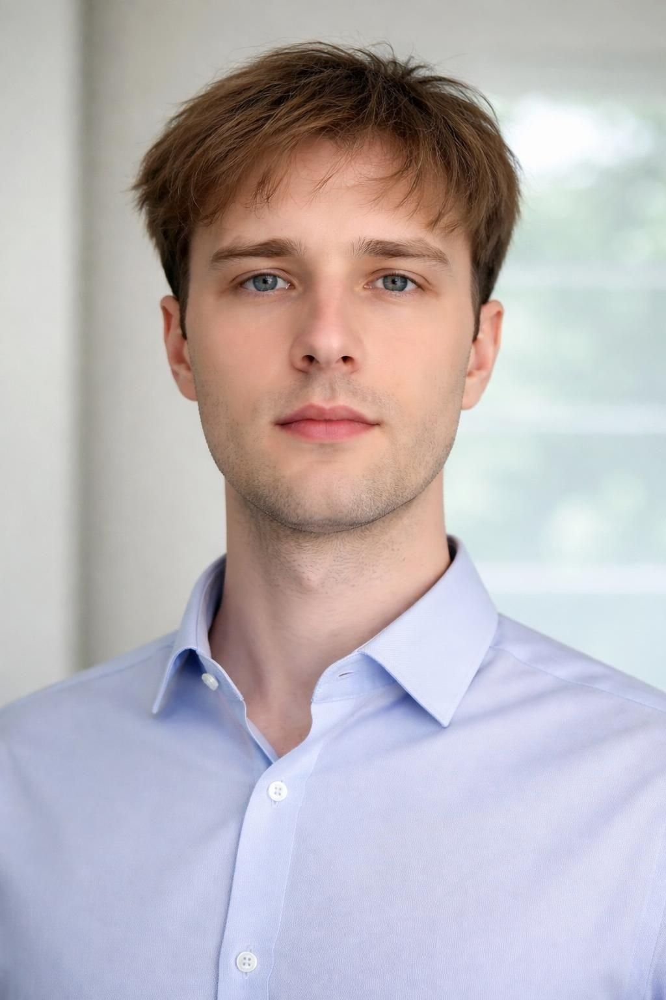
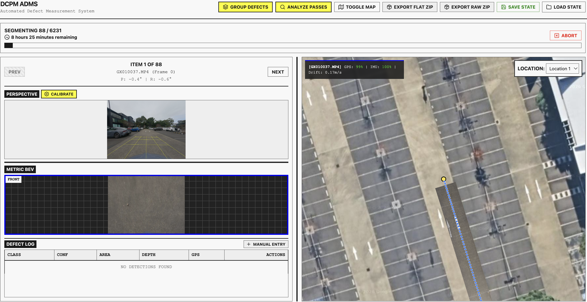
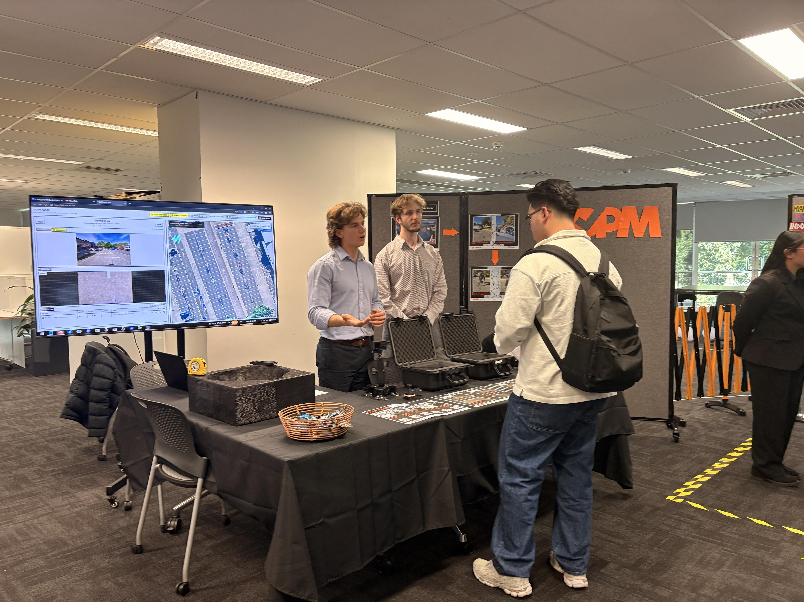

About Me

Hi, I'm Cameron. I am a final-year Software Engineering (Honours) student at the University of Technology Sydney (UTS), driven by a deep fascination with how software can seamlessly interface with the physical world.
My engineering journey began with a natural curiosity for taking things apart to see how they worked. This early interest evolved into a passion for software development, embedded systems, and artificial intelligence. Over the course of my degree, I have honed my skills in everything from low-level C++ programming to full-stack web development and computer vision.
During my recent 12-week internship at Optik Consultancy, I worked on the Automated Defect Measurement System (ADMS) for Damage Control Project Management (DCPM). This experience was pivotal in shaping my professional identity. It taught me that writing elegant code is only half the job; the other half is understanding the client’s operational constraints, translating complex AI concepts into plain English, and upholding strict engineering ethics.
Outside of my professional and academic life, I am an avid tinkerer. I spend my downtime building custom automotive electronics (like my Toyota Corolla digital clock replacement), self-hosting software and home automation systems (such as my C-Bus Alexa integration), and tinkering with 3D printing. These hobbies keep me creative and continuously fuel my passion for learning new technologies.
I am now looking to bring my blend of technical problem-solving and proactive communication to a graduate role, specifically targeting industries focused on computer vision and embedded systems.
Curriculum Vitae
Cameron Merrick
Linley Point, NSW | 876 543 2140 | [Click to Reveal Email]
LinkedIn: linkedin.com/in/cameron-merrick | GitHub: github.com/Cxmrykk
Professional Profile
A dedicated and innovative final-year Software Engineering (Honours) student with a GPA of 5.04. Proven expertise in developing full-stack applications, integrating AI/machine learning models, and building embedded systems. Strong communicator with hands-on consulting experience, looking to leverage technical problem-solving skills in a dynamic graduate engineering role.
Education
Bachelor of Engineering (Honours) – Software Engineering
2022 – 2026University of Technology Sydney (UTS)
- GPA: 5.04 | WAM: 70.32
- Key Achievements: High Distinctions in Programming 1 (95%), Fundamentals of C Programming (92%), Software Analysis Studio (88%), Designing Sustainable Engineering Projects (85%), Secure Programming and Penetration Testing (85%), and Cryptography (85%).
Professional Experience
Software Engineering Intern
May 2026 – Aug 2026Optik Consultancy (Client: Damage Control Project Management)
- Collaborated in an agile team of six to deliver the Automated Defect Measurement System (ADMS), a complex software suite for road defect detection using computer vision.
- Engineered solutions to extract telemetry (GPS, speed, IMU) from GoPro metadata and performed mathematical projections to generate flat, metric maps.
- Communicated highly technical AI limitations and pipeline architectures to non-technical client stakeholders during weekly meetings.
- Ensured ethical compliance by documenting and transparently reporting environmental constraints (e.g., wet road reflections) impacting government funding claims.
General Duties / Customer Service
Aug 2022 – Mar 2023North Ryde RSL
- Worked efficiently in a fast-paced hospitality environment, managing competing priorities across the bar, cafe, and gaming floors.
- Developed strong interpersonal communication skills and a strong work ethic.
Work Experience Student
Jun 2019Schneider Electric, Macquarie Park
- Shadowed engineers working on industrial home automation software (C-Bus lighting, relays, HVAC).
- Assisted with on-site building maintenance tracking and system monitoring in the Sydney CBD.
Key Personal & Academic Projects
- DCPM-ADMS (Computer Vision Pipeline): Engineered a Flask and JS-based automated defect measurement system utilising YOLO and SAM2 AI models to georeference and measure road defects.
- CirQuS Fridge Monitoring (Full-Stack IoT Dashboard): Developed a real-time telemetry dashboard using React, Fastify, and TimescaleDB to monitor dilution refrigerators at the Millikelvin lab.
- SIS15 (AI Sustainability App): Created a React Native mobile app integrating PyTorch and OpenAI APIs to classify household waste and provide dynamic recycling instructions.
- Corolla-Clock (Embedded Systems & Hardware): Designed custom C++ firmware, hardware schematics, and 3D-printed housing to replace a vehicle’s digital clock using an ESP32 and AMOLED display.
- C-Bus-Helper (Home Automation): Built a Node.js integration suite and web dashboard to enable Amazon Alexa voice control for Clipsal C-Bus networks.
- yt-dlp-tube (Self-Hosted Media Frontend): Developed a private YouTube frontend in Python/Flask featuring edge-caching, SponsorBlock integration, and dual-audio syncing.
Technical Skills
- Languages: C, C++, Python, JavaScript/TypeScript, SQL, HTML/CSS.
- Frameworks & Tools: React, Node.js, Flask, React Native, PlatformIO, OpenCV, PyTorch.
- Databases: PostgreSQL, TimescaleDB, SQLite.
- Systems & Infrastructure: Git, Docker, Linux, WebSockets, REST APIs, Embedded Systems (ESP32, Arduino).
- Transferable Skills: Agile project management, stakeholder communication, technical documentation, problem-solving, ethical engineering practice.
Internship Reflection


What were your expectations about your internship before you joined?
Before joining Optik Consultancy for my 12-week internship, I expected the experience to be heavily isolated and code-centric. Coming from a university environment where assignments often test individual technical capabilities, I anticipated that I would be given a set of requirements, assigned a desk, and asked to write algorithms for eight hours a day.
What was the reality? How was it different from your expectations?
The reality was vastly different and far more collaborative. Working on the Automated Defect Measurement System (ADMS) for our client, DCPM, required constant interaction. Rather than just writing code in a silo, I was actively participating in weekly client meetings, explaining our progress, and negotiating feature scopes.
What lessons were the most important from your internship? Why were they important?
The most critical lesson I learned was the importance of professional accountability and ethical transparency. During field tests, I discovered that wet road conditions blinded our AI models, skewing the metric calculations by nearly 12%. Because these calculations were used to claim government funding, ignoring this edge case could have led to fraudulent claims.
After your workplace experience, what would you say your value proposition would be to an employer? How can you demonstrate this?
My value proposition to an employer is my ability to bridge the gap between advanced technical innovation and practical, client-focused business solutions. I can demonstrate this through my work on ADMS, where I didn't just build a computer vision pipeline; I contextualised it for the client, documented its limitations, and ensured it met strict government compliance standards.
How did your internship influence the type of role in which you are interested?
My time at Optik Consultancy solidified my passion for projects where software directly interprets and interacts with the physical world. Moving forward, I am explicitly targeting graduate roles and industries focused on computer vision and embedded systems.
Cover Letter
Dear Hiring Committee,
I am writing to express my interest in the Graduate Engineers Program at Industrus Engineering, as advertised. I am particularly drawn to Industrus Engineering because of the Graduate Program's unique rotational structure, which offers the invaluable chance to work across multidisciplinary teams and tackle diverse national projects, from renewable energy storage to disaster recovery.
A commitment to ethical conduct and the highest standards of professional accountability
During my internship at Optik Consultancy, my team developed the Automated Defect Measurement System (ADMS) to assist a client with government disaster funding claims. My task was to ensure the accuracy of the software’s spatial measurements. During validation, I discovered that wet road conditions blinded our computer vision models, skewing the calculations. Rather than hiding this edge case to make the software appear flawless, I proactively documented the environmental limitation in our final report and built a manual review feature into the software.
Demonstrated ability to effectively communicate both with other engineers and with stakeholders from different fields
While developing the ADMS prototype, I needed to articulate the complexities of our computer vision pipeline to both my technical team and our non-technical client representatives. My task was to ensure our engineering team remained aligned on the software architecture while keeping stakeholders informed of our progress. To achieve this, I utilised Agile methodologies to communicate daily technical requirements clearly with my peers.
The ability to engage with a creative, innovative and proactive environment
In the Software Innovation Studio subject, my team was tasked with designing a technological solution to promote environmental sustainability. We needed to create an engaging application that would help users properly dispose of household waste. I proactively proposed and implemented a custom machine learning classification pipeline within a mobile application.
Demonstrated ability to use and manage information
During the Software Development Studio, I contributed to a monitoring dashboard for a university laboratory, which required handling large streams of continuous sensor data. My task was to manage, store, and retrieve high-frequency live data, such as temperature and pressure, coming from the lab's equipment. I integrated a time-series database to efficiently process the incoming information and wrote scripts to optimise the database for long-term scalability.
The ability to manage your own performance in a professional environment
Throughout my final year of study, I balanced a demanding Honours workload with my professional internship at Optik Consultancy. I was responsible for delivering critical components of the ADMS project, including telemetry extraction and mathematical image projections, within a strict 12-week deadline. I managed my deliverables into manageable weekly sprints using task-tracking software.
A demonstrated ability to work as part of a team and to show leadership when required
Towards the final weeks of the ADMS project, our team encountered a critical bottleneck when attempting to share our large AI model files across our version control repository. Taking the initiative, I researched and configured Git Large File Storage (LFS) for our repository. I then scheduled a brief technical workshop to instruct my peers on how to properly download the files and authored comprehensive setup documentation.
If you would like me to attend an interview or provide any further information, please contact me at [Click to Reveal Email] or call me on 876 543 2140.
I look forward to discussing how my skills and experiences align with the goals of Industrus Engineering.
Regards,
Cameron Merrick